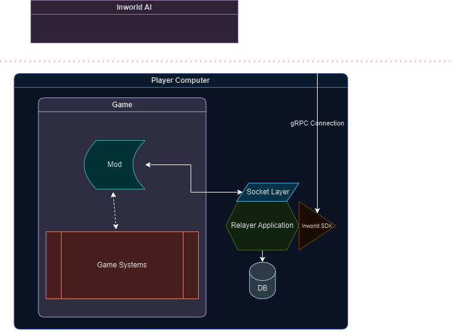

LLM Modlama 401
Neden Inworld?
Bu bölümün neden Inworld AI ile ilerlediğini merak ediyorsanız, hizmetler ve olası yaklaşımlar arasındaki karşılaştırmayı görmek için lütfen 301 bölümüne göz atın. Artıları ve eksileri masaya yatırdığınızda, Inworld'un en iyi seçenek olarak öne çıktığını düşünüyorum ve bu yüzden üretim modlarımın neredeyse tamamında Inworld'u kullandım.
Inworld Hakkında
İlk bakışta, "Inworld'un hedef kitlesi çoğunlukla oyun geliştiriciler gibi göründüğüne göre, ben bunu modumda nasıl kullanabilirim?" diye sorabilirsiniz. Ve böyle düşünmek hakkınızdır. Teknik olarak, Inworld'un ana hedefi, tüm kullanıcıların Inworld'u hiç görmeksizin kullanabileceği tek bir geliştirici aboneliği gibi görünüyor. Ancak tahmin edebileceğiniz gibi, bu durum ekonomik olarak hiçbir mod yaratıcı için uygulanabilir değil, aksi takdirde modları bir abonelik tabanlı DLC'ye dönüştürürsünüz. Inworld'un fiyatlandırma detaylarına bu bölümde girmeyeceğim çünkü her zaman müşteri geri bildirimlerini topluyorlar ve fiyatlandırmalarını buna göre güncelliyorlar. Bu yüzden, bunu okuduğunuz sırada, Inworld AI'nin fiyatlandırması mevcut sistemden bile daha uygun olabilir. Ancak genel olarak, Inworld'un fiyatlandırma politikası, kullanıcıların bir hesap oluşturup tamamen ücretsiz olarak uzun bir süre kullanmalarını sağlayacak kadar kullanıcı dostudur.
Aşağıda artıları ve eksileri sıralayacağım. Ancak bu, önceki 301 bölümünün bir tekrarı olmayacak; burada yalnızca DevEx'e odaklanacağım.
Artılar
Hepsini Yönetecek Bir Hizmet yaklaşımı: Gerekli tüm araçları özellik setinde sunar, bu yüzden birer birer farklı hizmetlere kaydolmanıza gerek yok.
Yabancılaştırmayan UX/UI: Ana olarak Geliştiriciler/Oyun Geliştiricilere odaklansalar da, UI/UX'leri düzenli kullanıcıları sistemle oynamaya ve ona aşina olmaya teşvik eder. Bu, bir mod geliştirici olarak size doğrudan bir fayda sağlamaz, ancak dolaylı olarak çok yardımcı olur çünkü birçok "bunu ve bunu nasıl yapabilirim" sorusunu ortadan kaldırır.
Fiyatlandırma: Tamamen ücretsiz olmayabilir, ama kesinlikle oyunculara hizmet vermek ve geliştirmek için yeterince ücretsiz. Oyuncuların, mod geliştiricinin herhangi bir değişiklik yapmasına gerek kalmadan daha fazla etkileşim süresi için hesaplarını yükseltmeleri de çok kolay.
Katılım: Herhangi bir sorunuz olması durumunda, Discord kanallarında geliştiriciler gerçekten sizinle etkileşim kuruyor. Bu, LLM modlama konusunda yeni olanlar için ekstra iyi. LLM talep kılavuzlarından teknik konulara kadar insanlara yardım ediyorlar.
Eksiler
Protokol ve SDK'lar: Seçilen protokol (gRPC), teknik yığınları açısından zaten biraz sınırlı olan modlar için iyi bir uyum sağlamıyor. Ayrıca, SDK'lar öncelikle Unreal veya Unity gibi popüler oyun motorlarına odaklanıyor, ancak modların %95'i, oyun bu motorlarla yapılmış olsa bile, bu motorlarla doğrudan etkileşimde bulunmuyor.
Eksik API'lar: Ne yazık ki, Inworld bazı çok önemli API'ları eksik, örneğin API veya SDK çağrısı ile karakterleri/beyinleri oluşturma, güncelleme veya silme. Ancak, Inworld'un bunun farkında olduğunu ve bunun üzerinde çalışmaya başladığını biliyorum, bu yüzden bunu okuduğunuzda, bu muhtemelen artık bir sorun olmayacak.
Inworld ile Modlamaya Başlama
Fiyatlandırma şeması ve giriş sistemi sayesinde, Inworld'u test etmek çok kolay. Sadece inworld.ai adresine gidin ve "Başla"ya tıklayarak hesabınızı oluşturun. Oradan, Inworld size belirli karakterleri demo karakterler olarak içeren bir çalışma alanı sağlar.
Öncelikle onlarla etkileşime geçmenizi ve tüm deneyimi anlamanızı şiddetle öneririm. Yeterince etkileşimde bulunduğunuzu hissettiğinizde, açıklamalarını, hedeflerini ve daha fazlasını kontrol edin. Diğer modellerin aksine, Inworld, günler boyunca özenle hazırlanmış büyük bir tanımlayıcı paragraf beklemiyor. Bunun yerine, endişeleri ve noktaları farklı bölümlere ayırıyorlar, böylece bunları daha düzenli bir şekilde doldurabilirsiniz. Ayrıca, Inworld, karakter oluşturma UI'si ile temel ve ileri kavramları ayırt ederek mükemmel bir iş çıkarır. Örneğin, çekirdek açıklama, tüm karakterlerin sahip olması gereken temel bir özelliktir, oysa kişilik ve duygular, bir temel karakterin ihtiyaç duyduğundan daha ileri özelliklerdir.
Her bölüm hakkında kısaca bilgi vermek için:
-
Çekirdek Açıklama: Bu, karakterinizin temel yapısını, tarihini, mevcut durumunu ve kişilik özelliklerini içerir. Bu açıklama çok önemlidir ve LLM tarafından çok ciddiye alınır. Bu bölümde geçici bilgi eklememek akıllıca olacaktır çünkü bir şekilde, bu açıklama karakterin ruhuna işlenmiştir.
-
Kusurlar: Bunlar, karakterin zayıflıklarını ve savunmasızlıklarını, motivasyonlarıyla birlikte temsil eder. Oluşturduğunuz karakteri derinleştirmek için kullanılabilirler.
-
Diyalog Stili: Her karakterin diyalogunu elle oluşturmak istemiyorsanız, Inworld size bir dizi çok kullanışlı seçenek sunar. Ancak ciddiye almak istiyorsanız, özel bir diyalog stili eklemelisiniz. Gözlemlerime dayanarak, bu genellikle en iyi yanıtları verir.
-
Ses Parametreleri: Bu, muhtemelen en anlaşılır bölümdür. Bir şeye dikkat çekmek gerekirse, bu, kutudan çıkan Elevenlabs entegrasyonu ile birlikte gelir. Bu, isterseniz (veya oyuncu istiyorsa), onların sahip olduğu herhangi bir Elevenlabs sesini klonlayabilir veya kullanabilir ve burada entegre edebilirsiniz. Ses verisi geçirildiğinde, bu durumda Elevenlabs kullanılacaktır.
İleri özelliklere geçiş yapalım: Kişilik, Bilgi, Hedefler, Sahneler ve İlişkiler.
-
Kişilik: İsminden de anlaşılacağı gibi, bu bölüm karakterlerimizin kişiliği ile ilgilidir. Burada, karakteri daha olumsuz, neşeli, korkmuş vb. seslendirebilirsiniz. Inworld'deki duygusal motor, Kişilik tarafından kontrol edilir, karakterin davranış biçimini, duygularını sıfatlar ve kaydırıcılar kullanarak tanımlayarak şekillendirir.
-
Bilgi: Kullanıcı sorularına verilen yanıtlar, Gerçekler ve Bilgi tarafından sağlanır. Karaktere özgü bilgiler Kişisel Bilgi altında düşerken, Ortak Bilgi birden çok karakter arasında paylaşılır, dünya yaratmayı kolaylaştırır. Karakterleriniz gerçek dünyada temelli değilse, bunlar önemlidir. Hala AI'yı bir sürü ortak bilgi ekleyerek tamamen "izole" edemezsiniz, ancak ne kadar çok bilgi eklerseniz, o kadar iyi uyarlanmış yanıtlar alırsınız.
-
Hedefler: Bu özellik, belirli eylemlerin önceden tanımlanmış kelimeler veya niyetler kullanılarak tetiklenmesini sağlar, son derece güçlüdür. Daha fazla ayrıntı için belgelerini incelemenizi şiddetle tavsiye ederim.
-
Sahneler: Potansiyelini tam olarak kavrayamadım ve çok fazla kullanmadım. Temelde, karakterlere mevcut konumlarına dair bir his sağlar. Modifikasyonlarım çoğunlukla dinamik ayarlara odaklandığı için, Sahneler benim için çok faydalı olmadı. Ancak statik sahneler üzerinde yoğunlaşıyorsanız, derinlemesine incelemeye değer.
-
İlişkiler: İlişki, NPC'ler ve oyuncular arasında farklı oyun oturumları boyunca ilişkilerin geliştirilmesine izin vermek üzere ayarlanmış yeni bir özellik setidir. Temel olarak, oyuncu ve karakter arasında "ilerleyici" ilişki anlamına gelir.
Daha fazla detay için, belgelerini kontrol edebilirsiniz.
Mimari
Not
Eğer oyun modlamanız uygun NDK entegrasyonunu destekliyorsa ve NDK geliştirmede deneyimliyseniz, lütfen Inworld NDK geliştirme kitini kontrol edin. Burada açıklanan mimariden 10 kat daha verimli olabilir. Bakınız inworld-ai/inworld-ndk.
Genellikle oyunlar, ne yaptığınızı bilmiyorsanız ve oyunun çekirdeğini tamamen modlamazsanız, ortamlarında farklı DLL'leri çalıştırmaya izin vermez. Bu yüzden genellikle yan arabayı kullanmak daha iyidir.
Daha önce modlarımla oynadıysanız, oyunu başlatmadan önce her zaman arka planda "terminal" görmeniz gerektiğini fark etmiş olabilirsiniz. Bunun ana nedeni, bu "terminal"in temelde, mevcut Inworld SDK'yı kullanan paketlenmiş bir Node.js soket sunucusu olmasıdır. Elbette, uygulamanızın ve gereksinimlerinizin bağlı olduğu duruma göre, bu gerekliliği tamamen kaldırabilir ve modu oyunun kendisine doğrudan entegre edebilirsiniz.

Yukarıdaki resmin mimariyi net bir şekilde açıkladığını düşünüyorum. Ancak biraz daha bağlam vermek için: Oyun, eylemlerini gerçekleştirmek için "Relayer Uygulaması"nı bir proxy olarak kullanır; Inworld AI sistemi ile hiçbir zaman doğrudan etkileşime girmez. Diyagramda, Relayer Uygulaması'nın bir soket katmanını kullandığı gösterilmiştir; ancak, modunuzdaki kısıtlamalara bağlı olarak, bu aynı zamanda basit bir REST API de olabilir. Yan arabayınızın Inworld SDK'yı entegre edebilmesi sürece, gerisi tamamen size bağlıdır. Teknik olarak, uygulama ile oyun arasında bağlantı kurmak için adlandırılmış boruları kullanabilirsiniz. Ya da hatta bazı özel formatları veya geçici çözümleri kullanabilirsiniz, örneğin bir dosyaya yazabilir ve uygulama tarafında bunu okuyabilirsiniz. Ancak, bu son çare olmalıdır çünkü I/O işlemleri korkunç derecede yavaştır ve iletişimde istenmeyen gecikmelere neden olabilir.
Yan araba yaklaşımının bir başka iyi yanı, teknik olarak ayrı bir süreç/uygulama gibi çalıştığı için, moddan bağımsız olarak çalışabilir ve daha fazla şey yapabilir. Örneğin, oyun size seslerin çalınmasına izin vermiyorsa, bunu yan araba ile ele alabilirsiniz çünkü muhtemelen bu tür işlemleri gerçekleştirme konusunda daha iyi bir şansı olacaktır. Ayrıca, mod kullanımı için bazı verileri saklamak, buna başvurmak isteyebilir, oyuncu ve sistem arasındaki iletişimi saklamak vb. için kendi küçük ölçekli veritabanınızı da oluşturabilirsiniz. Gerisi gerçekten hayal gücünüze bağlıdır - çılgına dönün! :)
Inworld SDK ile bir yan araba nasıl uygulanır konusunda bir ipucu ihtiyacınız varsa, kontrol etmenizi öneririm:
Resmi Inworld NodeJS SDK Örnekleri hem JS hem de TS için. Eğer Inworld konusunda hiç aşina değilseniz, bu sizin ana giriş noktanız olmalı. Link
Bannerlord Mod ana Bannerlord mod için C# kullanırken, mevcut Inworld NodeJS SDK ve bir websocket katmanı kullanan bir JS yan arabası kullanır. Link
Skyrim Mod ana Skyrim mod için C++, oyunla ilgili modlamalar için Papyrus Scripting, seslerin çalınması için C# Audio system (çünkü bunu Skyrim veya Node.js tarafında yapmak istemedim) + mevcut Inworld NodeJS SDK ve bir websocket katmanı kullanan TypeScript versiyonu bir yan arabası kullanır. Link
Inworld Discord kanalı, diğer geliştiricilerle iletişim kurmanın harika bir yolunu sağlar. Sorularınızı sorabilir ve topluluk bilgisinden bazı bilgiler toplayabilirsiniz. Tekerleği yeniden icat etmenize gerek yok. Link
Notlar
Inworld AI, harika bir hizmet ve şimdiye kadar onunla çalışırken çok eğlendim. Önceki 301 bölümünde ve burada belirttiğimiz gibi, artıları ve eksileri vardır, ancak artıların eksileri büyük ölçüde ağır bastığını rahatlıkla söyleyebilirim. Dahası, Inworld'a her zaman iyileştirmeler önerebilirsiniz. Onları takdir ettiğim harika yönlerden biri bu—ne kadar erişilebilir oldukları. Sistemi geliştirmek için bir öneriniz olduğunda, basitçe öneride bulunabilir ve onlar gerçekten dinler! Tabii ki, herhangi bir şirket gibi, kendi arka plan öğelerine sahipler ve bunları nasıl uygulayacaklarını değerlendirmeleri gerekiyor. Ancak pragmatik bir bakış açısıyla, ekledikleri her değerli özellik, onlara uzun vadede fayda sağlayacaktır. Bu nedenle, iyi önerileri geri çevirmek için pratikte hiçbir nedenleri yok. Bu yüzden, eğer yeterince iyi olduğuna karar verilirse, bunun üzerinde çalışan biri olacağından emin olabilirsiniz.
Bu tüm sayfa, LLM'ler kullanarak kendi modunuzu nasıl oluşturabileceğinize dairdir. Ancak, aynı fikirleri ve mimariyi kendi oyunlarınıza da uygulayabilirsiniz. Tabii ki, sistemler teknik olarak bu belgede ayrıntılı olarak anlatılandan farklı olabilir, özellikle çoğu modlamanın genellikle meydana geldiği özel oyun motorları, özgür olanlardan daha esneklik sunar.
Bu kadar, arkadaşlar! Umarım bu belge, bazılarınıza yardımcı olmuştur. Bahsetmediğim, muhtemelen çekici bulabileceğiniz birçok diğer hizmet ve model olduğunun farkındayım. Ancak, bu tüm yazı, bilgim ve deneyimlerime dayanmaktadır. Katkıda bulunmak veya herhangi bir öneriniz varsa, bir çekme isteği oluşturarak bunu yapmaktan çekinmeyin. Bu makaleyi değerli bulduysanız ve başka bir dilden iseniz, lütfen bunu dilinize çevirmeme yardımcı olun.